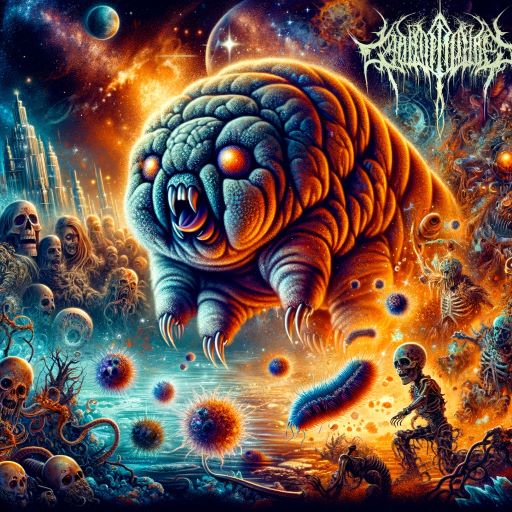

FastAI lesson 7
FastAI Lesson 7
Tenacious Animal

Recap
This lesson was a continuation of some of the ideas of the previous lesson about tabular data (I sort of conflated these two in my previous recap). It also continued some of the earlier lesson on computer vision, demonstrating some new techniques like ensembling. Introduced convnext model, which is an improvement in accuracy and memory and speed on imagenet. Talked about some crucial techniques for dealing with less performant training situations and larger models, including gradient accumulation. This technique updated the model weights continuously during an epoch per-batch. This allows training larger models without needing a GPU with more RAM, which is kinda neat!
Jeremy also introduced some techniques for competing on Kaggle, emphasizing that the most crucial things are a) creating a good test set b) iteration speed. This jives with my intuitions and experience with developing software and my own work. In situations where iterating is slow, it becomes incredibly hard to make forward progress. The anecdote I’ve heard about this is regarding an art class (pottery or photography): the students who make lots of things imperfectly, rather than focussing on perfecting a single thing, go on to build mastery and create the most artful work. Jeremy shared a story about a highly decorated practitioner focussing on making a single perfect model, but coming in literal last place because they failed to iterate.
Quiz
I got chatGPT to generate some quiz questions for me because this material covered the same book chapter as the last lesson:
Machine Learning and Data Science Quiz
- TwoR Model
- What is the TwoR model, and how does it differ from more complex machine learning models? TwoR is a model that uses two rules to make predictions. It is a simple model that is easy to understand and explain, but it is not very accurate. Another name for it is binary split.
- Creating a Decision Tree
- Describe the basic process of creating a decision tree. What are the key steps involved? Evaluate groups of data and split them into smaller groups based on the most important feature. Repeat this process until the groups are small enough to make predictions.
- Gini Impurity
- What is Gini impurity, and how is it used in the context of decision trees? Gini impurity is a measure of how often a randomly chosen element from the set would be incorrectly labeled if it were randomly labeled according to the distribution of labels in the subset. It is used to determine which feature to split on.
- Making a Submission
- What are the key considerations to keep in mind when preparing to make a submission in a data science competition? Make sure the submission is in the correct format and that the data is in the correct order.
- Bagging
- Explain the concept of bagging in machine learning. How does it contribute to the performance of ensemble models? Bagging is a method of combining the results of multiple models trained on different subsets of the same data. It reduces variance and helps to avoid overfitting.
- Random Forest Introduction
- What is a random forest, and how does it improve upon the idea of a single decision tree? A random forest is an ensemble learning method that uses a collection of decision trees to make predictions. It improves upon a single decision tree by reducing variance and avoiding overfitting.
- Creating a Random Forest
- Outline the steps involved in creating a random forest model.
- Create a collection of decision trees.
- Train each tree on a different subset of the data.
- Make predictions using the average of the predictions from all the trees.
- Feature Importance in Random Forest
- How is feature importance determined in a random forest, and why is it useful? Feature importance is determined by calculating the average decrease in gini impurity across all trees in the forest. It is useful for determining which features are most important in making predictions.
- Adding Trees to a Random Forest
- What are the effects of adding more trees to a random forest model? Adding more trees to a random forest model increases the accuracy of the model, but it also increases the time required to train the model.
- Out-of-Bag (OOB) Error
- What is OOB error in the context of random forests, and how is it calculated? OOB error is the error rate of a random forest model on the training set. The validation set in bagging is all the data not included in the training set. It is calculated by averaging the error rates of all trees in the forest.
- Model Interpretation
- Discuss the importance and methods of model interpretation in machine learning. Model interpretation is important because it allows us to understand how a model works and why it makes the predictions it does. It can be done by looking at feature importance, partial dependence, and SHAP values. This is easier in the case of a random forest than a nueral network.
- Removing Redundant Features
- Why is it important to remove redundant features from a model, and how can it be achieved? It is important to remove redundant features from a model because they can cause overfitting and reduce the accuracy of the model. This can be achieved by looking at feature importance and removing features with low importance.
- Partial Dependence
- Explain what partial dependence is and how it helps in understanding machine learning models. Partial dependence is a method of interpreting machine learning models by looking at the relationship between a feature and the target variable while holding all other features constant. It helps us understand how a model works and why it makes the predictions it does.
- Explaining Predictions
- How can you explain why a particular prediction was made by a machine learning model? You can explain why a particular prediction was made by a machine learning model by looking at feature importance, partial dependence, and SHAP values.
- Overfitting in Random Forest
- Is it possible to overfit a random forest? Under what circumstances might this occur? Yes, it is possible to overfit a random forest. This can occur when the trees in the forest are too deep, ie when there are too many leaf nodes. This happens because the trees are too specific and don’t generalize well to new data.
- Gradient Boosting
- What is gradient boosting, and how does it differ from other ensemble methods like random forests? Gradient boosting is an ensemble method that uses a collection of weak learners to make predictions. It differs from other ensemble methods like random forests because it uses a collection of weak learners instead of a collection of decision trees.
- fastkaggle
- What is fastkaggle, and how does it assist in Kaggle competitions? fastkaggle is a library that makes it easier to use Kaggle datasets in fastai. It assists in Kaggle competitions by providing a way to download and use Kaggle datasets in fastai. It also provides a way to submit predictions to Kaggle.
- fastcore.parallel
- Describe the functionality of fastcore.parallel and its application in data processing. fastcore.parallel is a library that makes it easier to use parallel processing in fastai. It can be used to speed up data processing by running multiple processes at once across the cores of a machine.
- Image Resizing Methods
- Explain the significance of
item_tfms=Resize(480, method='squish')in image processing. This is a method of resizing images to a specific size. It is used to make sure that all images are the same size before they are fed into a model.
- Explain the significance of
- Criteria for Evaluating Models
- What are some key criteria for evaluating the performance of machine learning models? Some key criteria for evaluating the performance of machine learning models are accuracy, precision, recall, and F1 score.